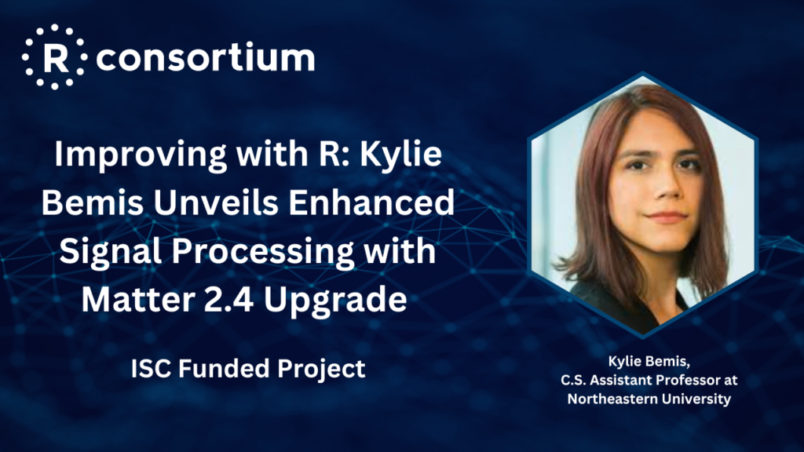

The R Consortium recently connected with Kylie Bemis, assistant teaching professor at the Khoury College of Computer Sciences at Northeastern University. She has a keen interest in statistical computing frameworks and techniques for analyzing intricate data, particularly focusing on datasets with complex correlation patterns or those that amalgamate data from various origins.
Kylie created matter, an R package that offers adaptable data structures suitable for in-memory computing on both dense and sparse arrays, incorporating multiple features tailored for processing nonuniform signals, including mass spectra and various other types of spectral data. Recently, Kylie upgraded matter to version 2.4. Since our May 2023 discussion, Kylie has enhanced its signal processing capabilities, focusing on analytical tools like principal component analysis and dimension reduction algorithms, which are crucial for imaging and spectral data. A grant from the R Consortium supports this project.
We talked with you about matter in May 2023. You were providing support for matter and looking to improve the handling of larger data sets and sparse non-uniform signals. matter has been updated to version 2.4. What’s new?
Last time we spoke, I had already rewritten most of the matter infrastructure in C++ for better maintainability. Since then, my focus has been on enhancing our signal processing capabilities. This summer, I’ve been adding essential signal processing functions and basic analytical tools, which are particularly useful in fields dealing with spectra or various types of signals.
I’ve incorporated fundamental techniques like principal component analysis, non-negative matrix factorization, and partial least squares. I’ve also added several dimension reduction algorithms and a range of signal processing tools for both 1D and 2D signals. This includes smoothing algorithms for images and 1D signals and warping tools applicable to both.
These enhancements are crucial for working with imaging and spectral data and include features like distance calculation and nearest neighbor search.
My aim has been to augment matter with robust signal processing tools, particularly for sparse and non-uniform signals. This is inspired by my experience in augmented reality (AR) and my desire to integrate tools similar to MATLAB’s Signal Processing Toolbox or SciPy in Python. As someone primarily analyzing mass spectrometry imaging data, I found these tools initially in my Cardinal package. I wanted to transfer them to a more appropriate platform, not specific to mass imaging, and reduce Cardinal’s reliance on compiled native code for easier version updates.
Additionally, I’ve been building a more robust testing infrastructure for these tools and documenting them thoroughly, including citations for the algorithms I used for key picking and smoothing techniques. This documentation details the implementation of various algorithms, such as guided filtering and nonlinear diffusion smoothing, citing the sources of these algorithms.
By providing support for non-uniform signal data, matter provides a back end to mass spectrometry imaging data. But working with large files is applicable in a lot of domains. What are some examples?
I deal with large files and data sets across various fields. Matter can be particularly impactful in areas dealing with signal, spectral, or imaging data. One field that comes to mind is remote sensing, where the imaging tools I’ve incorporated would be highly beneficial. That’s one key application area.
Another field is biomedical imaging, especially MRI data. For instance, a data format we often use for mass spectrometry imaging was originally developed for MRI – it’s called Analyze, and there’s a more recent variant known as NIfTI. This format is also supported in Cardinal for mass spec imaging data, but it’s primarily used in MRI and fMRI data analysis. While matter doesn’t directly offer plug-and-play functionality for MRI data, with some modifications, it could certainly be adapted for importing and processing MRI data stored in these formats.
We don’t have a specific function to read NIfTI files directly, but the structure of these files is quite similar to the mass imaging files we commonly work with. They consist of a binary file organized in a particular format, with a header that functions like a C or C++ struct, indicating where different image slices are stored. Understanding and interpreting this header, which is well-documented elsewhere, is key.
So, with some effort to read and attach the header file correctly, it’s entirely feasible to build a function for reading and importing MRI data. We’ve already done something similar with the Analyze format. Someone could definitely examine our approach and develop a method to handle MRI data effectively.
Previously, you indicated you wanted to improve R data frames and string support. You have a prototype data frame in the package already? What’s the schedule for improvements?
I’m currently evaluating how far we’ll expand certain features in our project. One of these features is supporting strings, which is already implemented. Regarding data frames, I believe there might be better solutions out there, but it’s quite simple to integrate our data with them. For instance, taking a vector or an array, whether a matter matrix or a matter vector, and inserting it into a data frame column works well, particularly with Bioconductor data frames.
I’m not entirely convinced that developing standalone, specialized data frame support in matter is necessary. It seems that other platforms, especially those like Bioconductor, are already making significant advancements in this area. For now, it seems sufficient that users can easily incorporate a matter vector or array into a data frame column. I’m hesitant to duplicate efforts or create overlapping functionalities with what’s already being done in this field.
What’s the best way for someone to try matter? How should someone get started?
Like any Bioconductor package, we offer a vignette on the Bioconductor website. This vignette provides a basic guide on how to start using our package, including creating matrices and arrays. It shows how these can serve as building blocks to construct larger matrices, arrays, and vectors. This is a straightforward way for users to begin.
Regarding the applicability of our package, it really depends on the specific data needs of the user. For instance, our package provides out-of-memory matrices and arrays. If that’s the primary requirement, then our package is certainly suitable. However, there are other packages, both in Bioconductor, like HDF5 array support, and on CRAN, such as big memory and FF, that also offer similar functionalities.
The real advantage of our package becomes apparent when dealing with specific data types. If you’re working with data formats like MRI, where you have a binary file and a clear understanding of its format, our package can be very helpful. It simplifies attaching different parts of the file to an R data structure.
Moreover, if your work involves signal data, particularly non-uniform signals like those in mass spectrometry or imaging data, our package becomes even more beneficial. Over the summer, I’ve added extensive support for preprocessing, dimension reduction, and other processes that are crucial for handling these types of data. So, in these scenarios, our package can be a valuable tool.
Anything else you would like to share about matter 2.0?
I’ve spent much of the summer working on improvements to the matter package, and it’s now in a good place, particularly regarding signal processing capabilities. These enhancements are largely aligned with the needs of mass spectrometry, an area I closely focus on. As new requirements emerge in mass spectrometry, I’ll look to add relevant features to matter, particularly in signal and image processing.
However, my current priority is updating the Cardinal package to support all these recent changes in matter. Ensuring that Cardinal is fully compatible with the new functionalities in matter is my next major goal, and I’m eager to get started on this as soon as possible.
How do I Join?
R Consortium’s R User Group and Small Conference Support Program (RUGS) provides grants to help R groups organize, share information, and support each other worldwide. We have given grants over the past four years, encompassing over 65,000 members in 35 countries. We would like to include you! Cash grants and meetup.com accounts are awarded based on the intended use of the funds and the amount of money available to distribute.